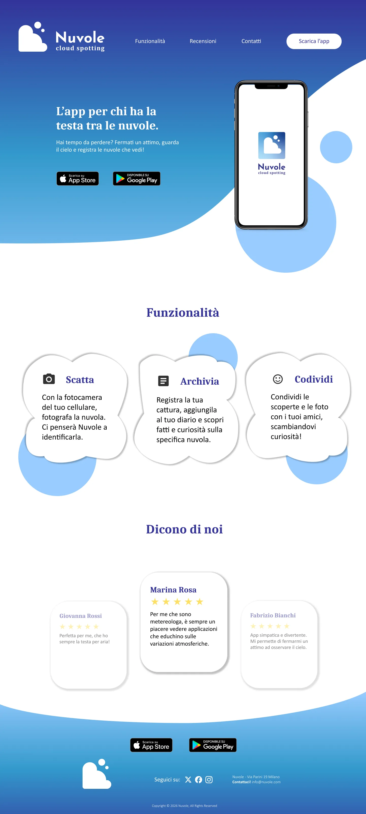
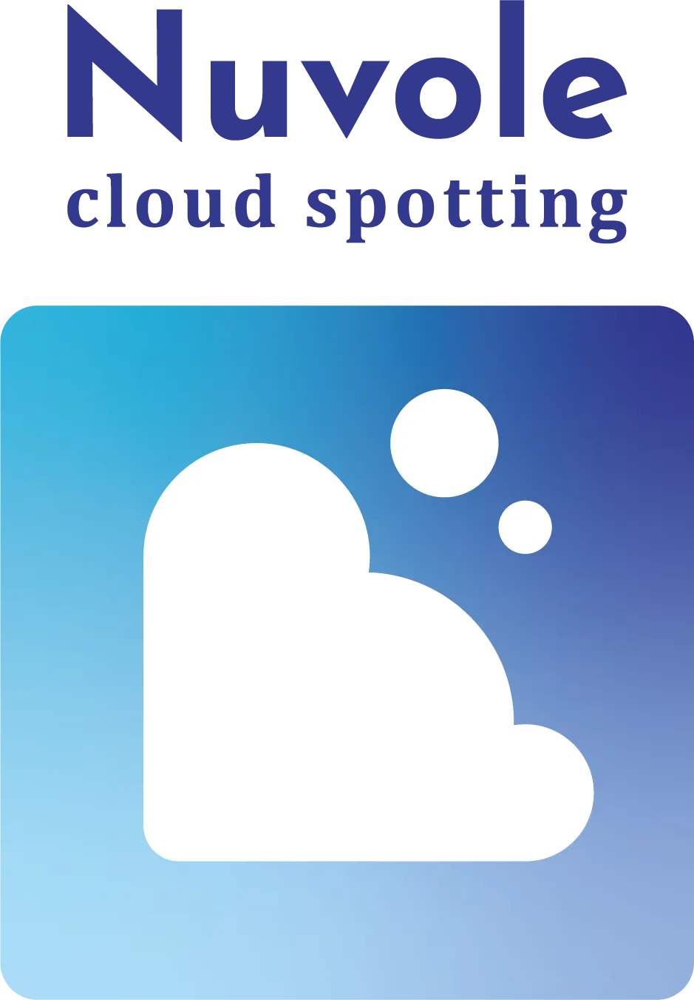

UX/UI DesignUX/UI Design
NuvoleNuvole
Look up. Nuvole is a concept for a free app that identifies clouds through your camera — a UX/UI exercise blending education with the simple pleasure of watching the sky. Landing page and brand identity, designed to make you lift your head.Guarda in su. Nuvole è un concept per un'app gratuita che identifica le nuvole tramite la fotocamera — un'esercitazione UX/UI che unisce educazione e il semplice piacere di osservare il cielo. Landing page e brand identity, pensate per farti alzare lo sguardo.